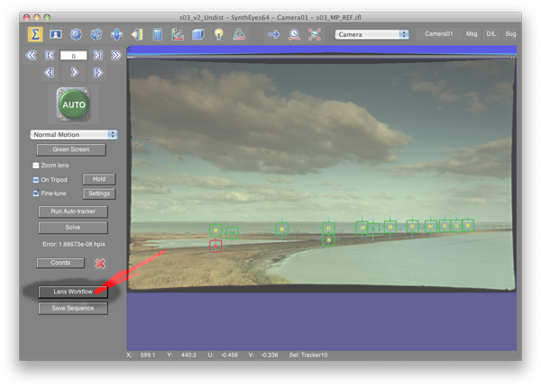
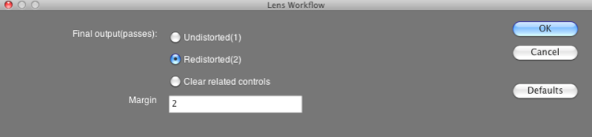

This plugin helps to prep images that have been undistorted using the Syntheyes matchmoving software. It implements the same undistortion algorithm as the one embedded in Syntheyes and explained here.
To use the plugin, you will need to use the Lens Workflow script included with Syntheyes. When you have solved the shot, lens distortion will likely be computed. After that, hit "Lens Workflow".
You will be presented with a choice dialog, and the option you need is the one called "Redistorted"
What it does is it undistorts your footage, and simultaneously makes your camera FOV a little wider and your composition size (the film back) a little bigger, to accomodate for image parts that would disappear if you would be undistorting the image by other means.
Now open the Shot->Image Preparation menu. Go to the Lens tab and note the values for Distortion and Cubic Distort. Then note down the crop values on the Cropping tab.
Load your source footage into Nuke and punch in the values, here's how they are related:

and you should get exactly the same undistortion as the one you would have gotten from Syntheyes using the Save Sequence button.
Currently there is no equivalent redistortion - just use a sane coefficient with a negative sign compared to the undistorted version.
For questions and comments shoot a mail to me _at_ julik.nl